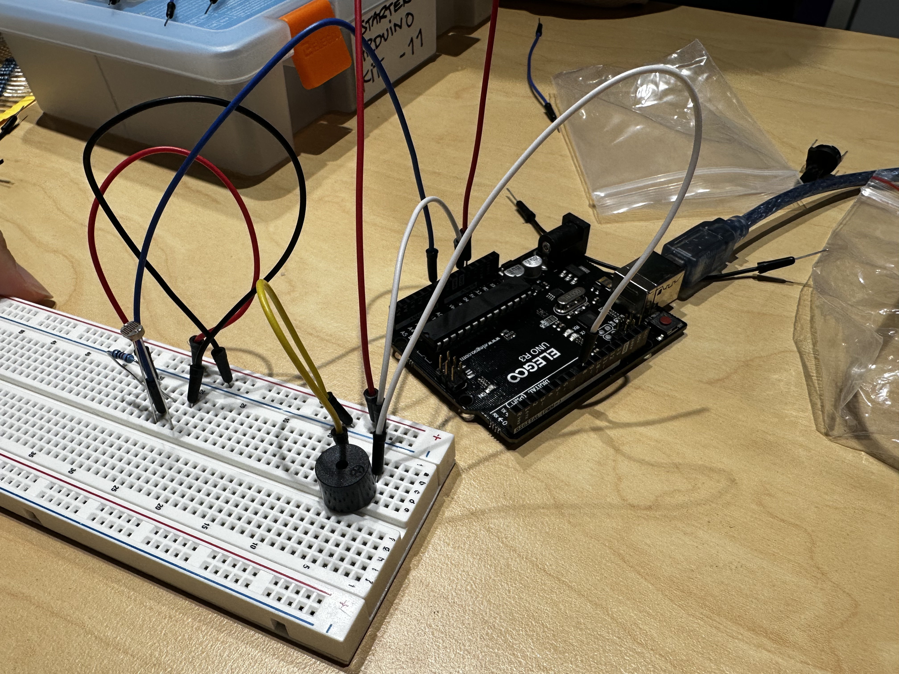
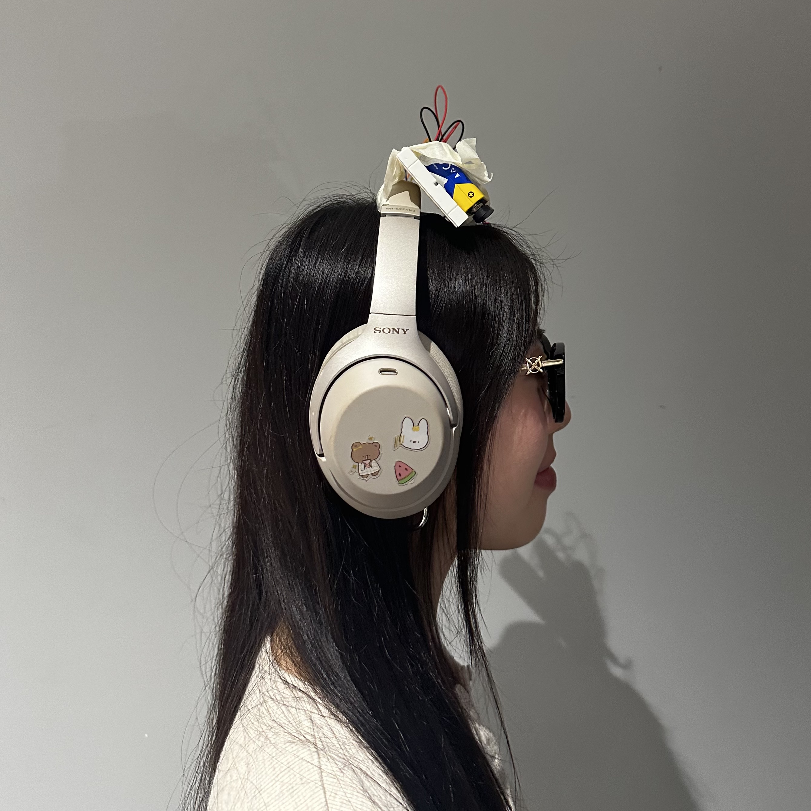
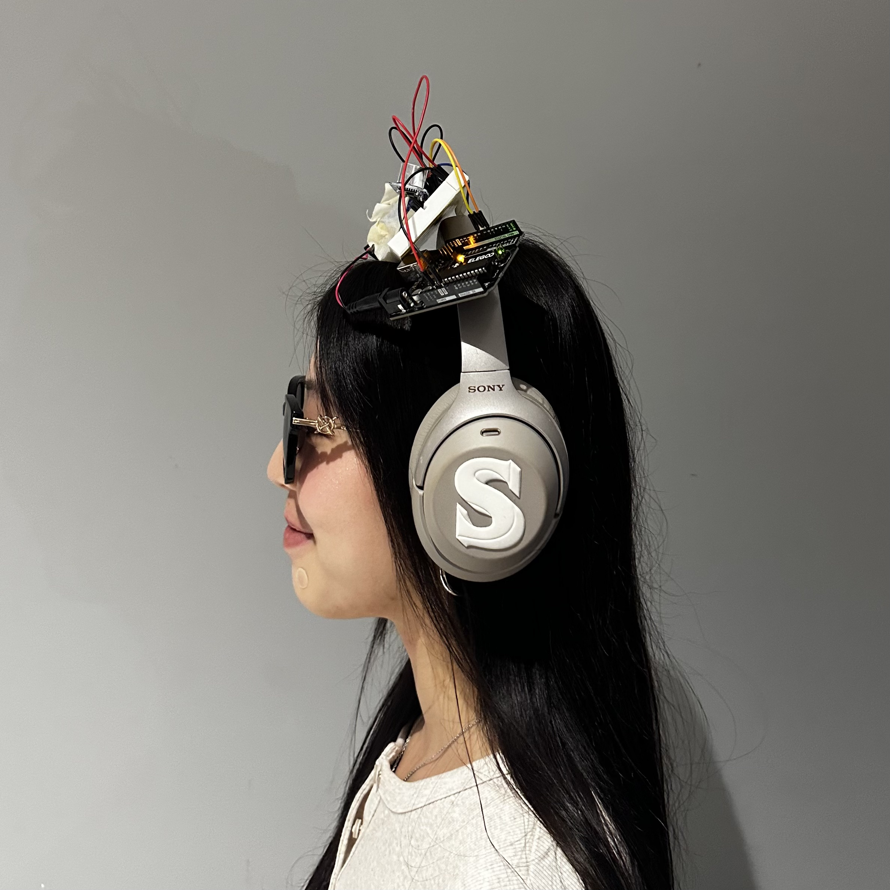
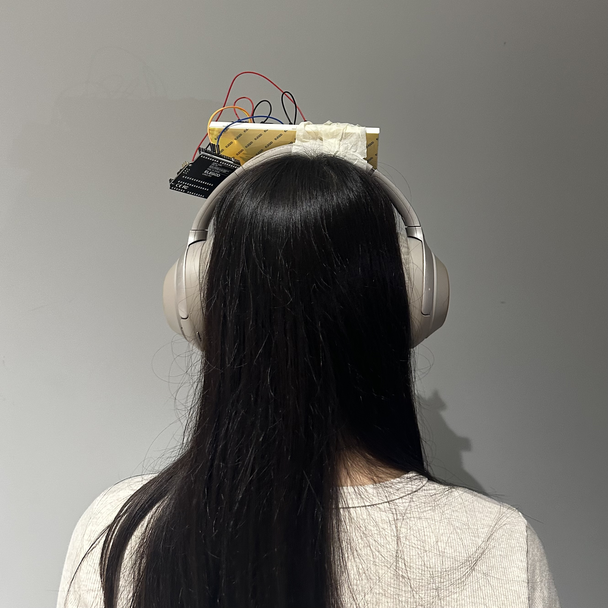

Content for Week 7 goes here.
First we had to learn how to make a theremin with Arduino speakers.

Lord I did not like this, I'm sorry but this took forever. We first used my laptop too which ended up being the main problem which is so pointed, cause I like to think my laptop's fine! Anyways. Thermin picture.
Following the wise words of Regina George, we went to create a defense mechanism for people who want to be left alone!


